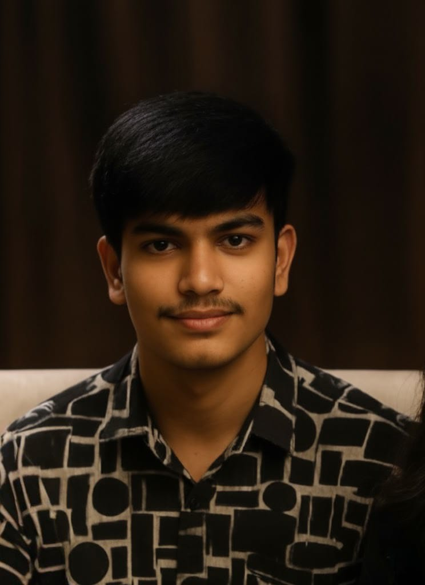

Dheeraj Kumar

Welcome to my portfolio website! My name is Dheeraj, and I am a passionate web developer who enjoys creating modern, responsive, and user-friendly websites. Web development is more than just writing code for me; it is an opportunity to transform ideas into meaningful digital experiences. I believe that a website is often the first impression a person or business makes online, which is why I focus on creating designs that are attractive, functional, and easy to navigate. My journey into web development started with a curiosity about how websites work and gradually developed into a strong passion for designing and building digital solutions. Through continuous learning and practice, I have gained experience in creating websites that perform efficiently and provide a smooth experience for users. I enjoy working on projects that challenge my creativity and problem-solving skills because they allow me to grow as a developer. Every website I build is designed with attention to detail, ensuring that visitors can easily access information and interact with the content. My goal is to help businesses, organizations, and individuals establish a strong online presence through high-quality web solutions. Whether it is a personal portfolio, business website, or custom web application, I strive to deliver work that reflects professionalism and innovation. This portfolio showcases my skills, projects, and experiences while giving visitors an opportunity to learn more about my work and development journey.
I have experience working with HTML, CSS, JavaScript, and various web development tools that help create visually appealing and highly functional websites. These technologies allow me to design layouts, implement interactive features, and ensure that websites perform well across different devices and screen sizes. Responsive design is one of my key priorities because users access websites from desktops, tablets, and smartphones. By following modern development practices, I create websites that adapt seamlessly to different environments while maintaining a consistent user experience. In addition to technical development, I pay close attention to design principles such as color harmony, typography, spacing, and usability. A successful website should not only look attractive but should also provide visitors with a smooth and intuitive experience. I enjoy combining creativity with technology to build solutions that are both practical and engaging. Performance optimization is another important aspect of my work because fast-loading websites improve user satisfaction and search engine visibility. I continuously explore new frameworks, libraries, and industry trends to stay updated with the evolving web development landscape. Learning new technologies enables me to enhance my skills and deliver better solutions to clients and users. Through dedication, practice, and continuous improvement, I aim to create websites that meet professional standards and provide real value to those who use them.
Learning and self-improvement play a major role in my journey as a web developer. Technology changes rapidly, and I believe that staying updated with the latest tools and techniques is essential for long-term success. Every project I work on presents an opportunity to expand my knowledge, solve new challenges, and improve my development skills. I enjoy exploring topics such as frontend development, backend programming, database management, user interface design, and web performance optimization. By working on personal projects and practical applications, I gain hands-on experience that strengthens my understanding of web technologies. My approach to development focuses on creating solutions that are reliable, scalable, and user-friendly. I value attention to detail and always strive to produce work that meets high-quality standards. Beyond technical skills, I believe communication, teamwork, and problem-solving are equally important qualities for a successful developer. Through collaboration and continuous learning, I aim to contribute positively to every project I undertake. This portfolio represents not only the projects I have completed but also my commitment to growth and professional development. As I continue my journey, I look forward to exploring new opportunities, building innovative solutions, and helping clients achieve their goals through effective web development. Thank you for visiting my portfolio and taking the time to learn more about my work and aspirations.
Services
I offer a variety of digital services designed to help businesses, organizations, students, and individuals establish a strong online presence. My primary focus is web development, where I create responsive, modern, and user-friendly websites that work efficiently across different devices and screen sizes. Every website is developed with attention to design, functionality, and performance to ensure visitors have a smooth browsing experience. I believe that a successful website should not only look attractive but also serve its intended purpose effectively. Along with web development, I provide graphic design services that help improve visual communication and brand identity. Good design plays a vital role in capturing attention and creating a lasting impression, which is why I focus on creating clean and professional visuals. Another service I offer is content creation, which involves producing engaging and informative content that helps businesses connect with their audience. Whether it is website content, promotional materials, or digital media, I aim to create content that is clear, meaningful, and aligned with the goals of the project. My approach to every service is based on understanding the client's requirements and delivering solutions that provide real value. I prioritize quality, creativity, and professionalism in every task I undertake. By combining technical expertise with creative thinking, I strive to develop solutions that help clients achieve their objectives and strengthen their online presence. My goal is to build long-term relationships through reliable work, continuous improvement, and dedication to customer satisfaction.
- Web Development
- Graphic Design
- Content Creation
Projects
Over time, I have worked on several projects that have helped me strengthen my technical skills and gain valuable practical experience in web development. Each project has presented unique challenges and opportunities to learn new technologies, improve problem-solving abilities, and develop a deeper understanding of modern development practices. One of my key projects is my personal portfolio website, which serves as a platform to showcase my skills, achievements, and professional journey. Through this project, I gained experience in responsive design, layout creation, navigation systems, and user interface development. Another important project involved creating an e-commerce platform where users could browse products, manage shopping carts, and complete purchases efficiently. This project allowed me to explore more advanced concepts such as database integration, dynamic content management, and user authentication. I have also worked on mobile application development projects that introduced me to designing interfaces specifically optimized for mobile users. These experiences helped me understand the importance of usability, accessibility, and performance optimization. Every project has contributed to my growth as a developer and has enhanced my confidence in handling real-world development challenges. I enjoy creating projects because they provide an opportunity to apply theoretical knowledge to practical situations. Through continuous experimentation and learning, I aim to build projects that solve real problems and deliver meaningful value to users. My portfolio reflects my dedication to learning, innovation, and professional growth while demonstrating the skills I have developed throughout my journey as a web developer.
- Project 1: Portfolio Website
- Project 2: E-commerce Platform
- Project 3: Mobile App Development
Hire Me
If you are looking for a dedicated web developer who is committed to delivering high-quality work, I would be happy to help. Whether you need a personal website, business website, landing page, or custom web solution, I am ready to bring your ideas to life.If you are looking for a dedicated and enthusiastic web developer who is committed to delivering high-quality work, I would be delighted to assist you. My goal is to create websites and digital solutions that not only meet client expectations but also provide long-term value. I understand that every project is unique, and I approach each task with careful planning, creativity, and attention to detail. Whether you need a personal portfolio, business website, landing page, educational platform, or custom web application, I am prepared to transform your ideas into reality. I focus on developing websites that are visually appealing, responsive, user-friendly, and optimized for performance. By combining technical skills with a passion for innovation, I strive to create solutions that help businesses and individuals establish a strong online presence. I believe that successful projects are built on clear communication, mutual trust, and a shared commitment to achieving goals. Throughout the development process, I work closely with clients to understand their requirements, provide updates, and ensure satisfaction with the final result. My dedication to continuous learning enables me to stay updated with modern technologies and industry trends, allowing me to deliver solutions that meet current standards. When you choose to work with me, you can expect professionalism, reliability, and a strong commitment to quality. I am always excited to take on new challenges and contribute to projects that make a positive impact. Let's work together to create something amazing that meets your goals and exceeds expectations.